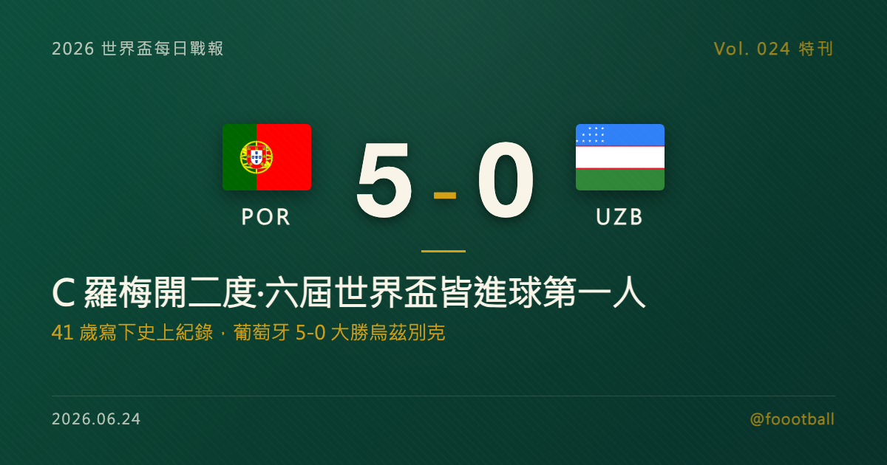

六屆世界盃皆破門：C 羅 41 歲寫下史上第一，葡萄牙的最後一舞
2026 世界盃 K 組次輪，葡萄牙在休士頓 5-0 大勝烏茲別克。41 歲的 C 羅第 6、39 分鐘梅開二度，成為足球史上第一位在六屆不同世界盃（2006、2010、2014、2018、2022、2026）都有進球的球員，世界盃生涯進球累計至 10 球、超越尤西比奧成為葡萄牙隊史第一。要說清楚的是，這不是「進最多球」的紀錄——男足世界盃史上頭號射手是昨晚以 18 球登頂的梅西——而是「在最多屆都進球」的長壽紀錄。這篇特刊把這場梅開二度、C 羅橫跨二十年的世界盃軌跡、這項紀錄的真正座標，以及葡萄牙的晉級之路，逐項講清楚。

2026 世界盃特刊｜Vol. 024 番外
有些紀錄關乎一瞬間的爆發，有些紀錄則關乎一整個職業生涯的堅持。2026 年 6 月 23 日的休士頓，41 歲的克里斯蒂亞諾·羅納度（Cristiano Ronaldo，C 羅）寫下的，毫無疑問是後者。
在 NRG 球場，葡萄牙 5-0 大勝烏茲別克。C 羅上半場梅開二度——第 6 分鐘、第 39 分鐘——這兩顆球，讓他成為足球史上第一位在六屆不同世界盃都有進球的球員。對一位再過幾個月就要邁入職業生涯尾聲、且已多次坦言這會是自己最後一屆世界盃的球員而言，能在 41 歲的高齡、以這樣的方式改寫紀錄，本身就是一種難以複製的傳奇。
這一夜值得慢慢拆——先拆這場對烏茲別克的梅開二度，再拆「六屆皆進球」這項紀錄的真正份量，接著說清楚他生涯唯一的遺憾，最後，聊聊葡萄牙接下來的晉級之路。
一、對烏茲別克的梅開二度：41 歲的開門紅
葡萄牙這場勝利，從第 6 分鐘就定下了基調。
第 6 分鐘，C 羅閃電破門。 開賽不久，葡萄牙右路傳中送入禁區，C 羅在近距離完成終結，為球隊先馳得點。對一支實力佔優的球隊而言，能在開場階段就由頭號球星打破僵局，幾乎等於替整場比賽定了調——它既能穩住軍心，也能逼著對手提早壓出來搶攻，讓空間進一步打開。
第 17 分鐘，努諾·門德斯錦上添花。 葡萄牙並沒有給對手喘息的機會。努諾·門德斯（Nuno Mendes）以一記定位球攻入第二球，把領先擴大為 2-0。半場前的這個第二球，幾乎讓比賽的懸念提早消失。
第 39 分鐘，C 羅梅開二度。 上半場結束前，C 羅再下一城，個人本場第二球、也是把這場比賽推向「里程碑之夜」的關鍵一球。憑這顆球，他正式成為史上第一位在六屆世界盃都進球的球員。半場 3-0，勝負其實已無懸念。
下半場，葡萄牙繼續掌控局面。烏茲別克第 60 分鐘的一次防守中不慎自擺烏龍，把比分改寫為 4-0；替補登場的拉斐爾·萊昂（Rafael Leão）第 87 分鐘再入一球，鎖定 5-0 的大勝。這場勝利讓葡萄牙在小組賽前兩輪拿到 1 勝 1 平、積 4 分，把晉級的主動權牢牢握在手中。而全場的焦點，毫無疑問屬於那位在開賽 39 分鐘內就獨中兩元的 41 歲隊長。
值得一提的是，這場梅開二度，也終結了 C 羅本屆世界盃個人的進球荒——葡萄牙首戰 1-1 戰平剛果民主，他並未取得進球。能在球隊最需要的時候站出來、用兩顆球回應外界對「41 歲還行不行」的所有質疑，這正是 C 羅職業生涯一以貫之的回應方式：用進球說話。
二、六屆世界盃皆破門：一項關於長壽的紀錄
把鏡頭拉近到那兩顆球，會發現它們真正的重量，不在於這場 5-0 的比分，而在於它們所跨越的時間。
C 羅的世界盃進球，如今橫跨了整整二十年、六屆賽事。把每一屆攤開來看，這份名單本身就是一部濃縮的足球史：
- 2006 年德國世界盃：21 歲的 C 羅首度征戰世界盃，攻入 1 球。
- 2010 年南非世界盃：對北韓的比賽中破門，貢獻 1 球。
- 2014 年巴西世界盃：在小組賽中入賬 1 球。
- 2018 年俄羅斯世界盃：他的世界盃高光時刻——攻入 4 球，其中對西班牙一役更上演帽子戲法，至今仍是經典。
- 2022 年卡達世界盃：再添 1 球，當時便已成為史上第一位在五屆世界盃都進球的球員。
- 2026 年世界盃：對烏茲別克梅開二度，把這份名單延伸到了第六屆。
六屆、二十年、從 21 歲到 41 歲——這份橫跨時間的穩定，才是這項紀錄真正動人的地方。許多偉大球員的世界盃生涯，往往只能覆蓋兩到三屆；能連續六屆都站上世界盃舞台、且每一屆都有進球，靠的不是某一個賽季的爆發，而是一整個職業生涯近乎偏執的自我管理與對巔峰狀態的維持。
不過，要把這項紀錄擺到正確的位置，有一件事必須說清楚：這不是「進最多球」的紀錄。 C 羅的世界盃生涯進球，靠這場梅開二度來到 10 球，超越葡萄牙傳奇尤西比奧（Eusébio）、成為葡萄牙隊史世界盃進球最多的球員——但放到整個世界盃歷史的座標裡，這個數字仍排在多位前輩之後。男足世界盃史上頭號射手，是昨晚才以 18 球登頂的梅西（Lionel Messi）；姆巴佩（Kylian Mbappé）與德國名宿克洛澤（Miroslav Klose）各以 16 球、巴西名宿羅納度（Ronaldo，「大羅」）以 15 球，也都排在 C 羅之前。換句話說，C 羅今晚改寫的紀錄，關鍵字不是「最多」，而是「最久」——他是在最多屆世界盃都留下進球的人，這是一項屬於長壽與穩定、而非單純火力的紀錄。
也正因如此，這項紀錄與 41 歲這個數字擺在一起，才格外有說服力。它不是靠一屆世界盃的高產堆出來的，而是用二十年的時間、一屆一屆累積而成。對一位早已功成名就的球員而言，能在生涯的最後階段、仍以這種方式刷新足球史，靠的早已不是天賦，而是一種旁人難以想像的堅持。
三、唯一的遺憾：缺一座大力神盃的最後一舞
聊 C 羅的世界盃，繞不開一個略帶感傷的話題——金盃。
在 C 羅這份近乎無懈可擊的履歷裡，五座金球獎、多座聯賽冠軍、歐冠冠軍、歐洲國家盃冠軍……幾乎所有重量級榮譽都已收入囊中，唯獨世界盃冠軍，始終是那塊缺席的拼圖。對一位被公認為同世代最偉大球員之一的人來說，這既是生涯的遺憾，也是他遲遲不願離開這個舞台的原因之一。
而 2026 年這屆世界盃，幾乎可以確定是他追逐這座金盃的最後機會。C 羅本人已多次公開表明，這會是自己的最後一屆世界盃；他也談到，職業生涯大概只剩「一兩年」。換言之，這趟旅程，是一位 41 歲傳奇對足球最高榮譽發起的最後一次衝擊。
正是這層「最後一舞」的背景，讓他對烏茲別克的這場梅開二度顯得格外動人。當外界開始討論 41 歲的他是否還跟得上世界盃的節奏、是否該把位置讓給更年輕的隊友時，他用開賽 39 分鐘內的兩顆進球，給出了最直接的回應。這項「六屆皆進球」的紀錄，某種程度上正是他寫給世界盃的一封漫長情書——即使這趟旅程最終未必能以捧盃收場，他也已用二十年的穩定，在這項賽事的歷史裡刻下了一道無人能及的印記。
對球迷而言，無論最終結果如何，能在 2026 年再看一次 C 羅站上世界盃舞台、並且仍在破門與寫紀錄，本身就是一件值得珍惜的事。因為下一屆世界盃，球迷幾乎可以確定，將不會再有這位 7 號的身影。
四、葡萄牙的晉級之路：K 組形勢與末輪
把視野從 C 羅個人拉回球隊，葡萄牙的晉級前景同樣值得一說。
兩輪過後，K 組的形勢是：哥倫比亞兩戰全勝、以 6 分領跑，已提前鎖定晉級；葡萄牙以 1 勝 1 平、積 4 分緊隨其後，加上 +5 的淨勝球（全靠這場 5-0 灌出來），已站上極為有利的晉級位置；剛果民主 1 分、烏茲別克則兩戰全敗、已確定出局。本屆世界盃 32 隊晉級的規則下（12 個小組、每組前兩名加 8 個最佳第三名），葡萄牙手握的這 4 分與漂亮的淨勝球，已讓他們非常接近一張淘汰賽門票，但尚未在數學上完全鎖定。
末輪（美加墨 6/27），葡萄牙將與已經晉級的哥倫比亞正面對決。對葡萄牙而言，這場球的意義主要在小組頭名之爭——小組頭名仍可能影響 32 強的對位與路徑難度；在擴軍到 48 隊、淘汰賽改打 32 強的籤表裡，排序本身就是一種風險管理，對 C 羅這樣志在走得更遠的老將而言尤其關鍵。哥倫比亞雖已晉級，但同樣會想以全勝之姿、用一場勝利宣示自己是這個小組最強的球隊；這場「全勝之師對上晉級在望強權」的對決，看點十足。
而對葡萄牙更深一層的問題，其實不是「41 歲的 C 羅是否還是隊上最好的球員」，而是這支球隊是否願意、也能夠把他壓縮到一個極窄、卻極高價值的角色裡：禁區終結者、牽制中衛的重力點，以及更衣室的情緒引擎。這場 5-0 給出的提示是肯定的——真正值得討論的，不是 41 歲的他能否像 2014 或 2018 年那樣支配整場比賽，而是葡萄牙能否把他的活動範圍收到最適合現在身體條件的位置：少碰球、少拉邊、少承擔向前推進，把跑動與寬度交給萊昂、努諾·門德斯與中場，把最關鍵的六碼區判斷留給他。這場大勝的價值，不在於它證明葡萄牙能回到過去，而在於它提示葡萄牙或許已經找到一種與時間妥協的方式。
說到底，足球之所以動人，往往就在於這種「傳奇與時間賽跑」的時刻。C 羅已經把紀錄踢進了第六屆世界盃，也把葡萄牙帶到了晉級在望的位置。接下來的每一場球，對他而言都可能是世界盃舞台上的最後幾次亮相；而對球迷來說，能多看一場，就是多賺一場。從這場對烏茲別克的梅開二度開始，這位 41 歲傳奇的最後一舞，正漸入高潮。
常見問題
Q：C 羅創下的到底是什麼紀錄？ A：他成為足球史上第一位在「六屆不同世界盃」（2006、2010、2014、2018、2022、2026）都有進球的球員。這是一項關於長壽與穩定的紀錄——是「在最多屆都進球」，而非「進最多球」。
Q：那 C 羅是世界盃史上頭號射手嗎？ A：不是。C 羅的世界盃生涯進球累計為 10 球，是葡萄牙隊史世界盃進球最多的球員（超越尤西比奧）。但男足世界盃史上頭號射手是昨晚以 18 球登頂的梅西，姆巴佩與克洛澤各 16 球、巴西名宿羅納度 15 球，也都排在 C 羅之前。
Q：這是 C 羅最後一屆世界盃嗎？葡萄牙晉級了嗎？ A：C 羅本人已多次表明這會是他的最後一屆世界盃。葡萄牙兩輪過後積 4 分、淨勝球 +5，晉級在望（尚未數學上完全鎖定）；末輪（美加墨 6/27）將對上已提前晉級的哥倫比亞，爭奪 K 組頭名。
Tags: 世界盃, 2026世界盃, C羅, 羅納度, 葡萄牙, 世界盃紀錄